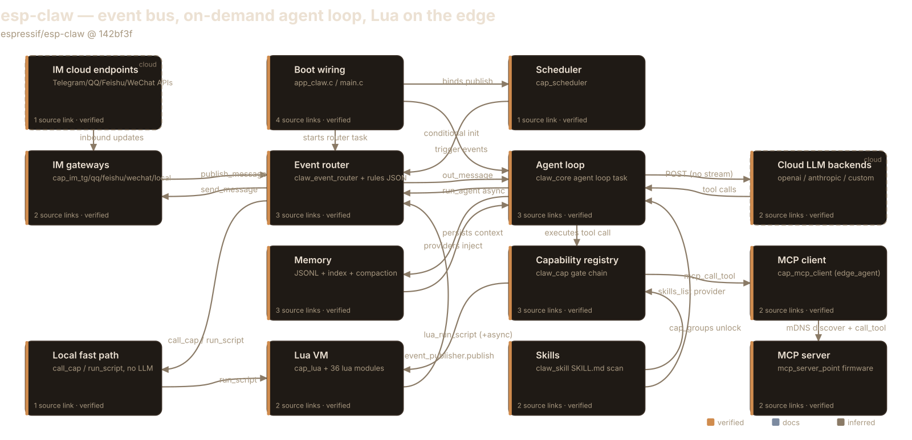
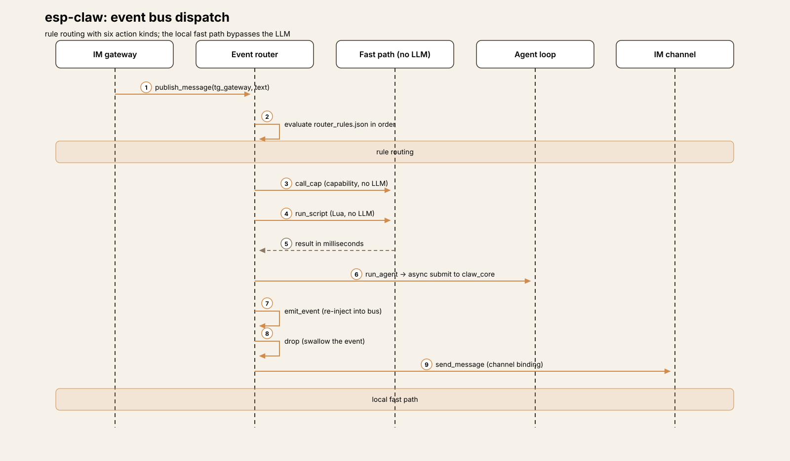
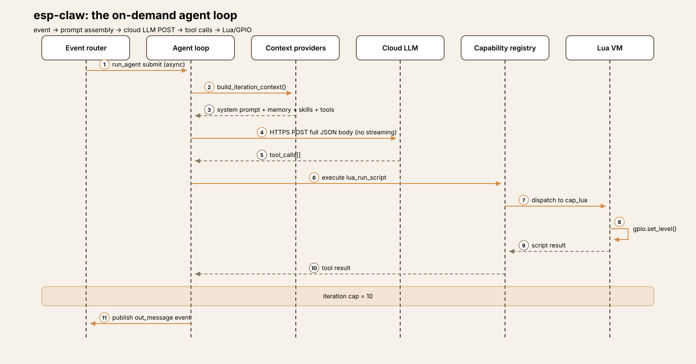
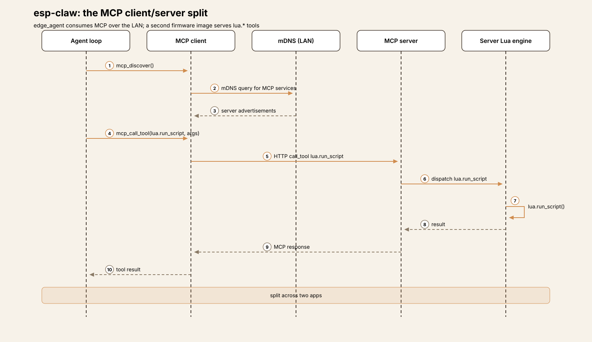
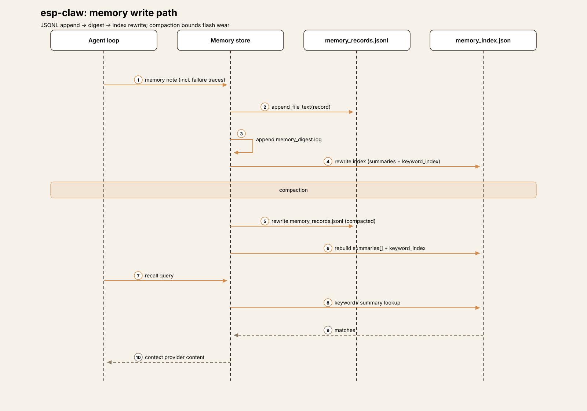
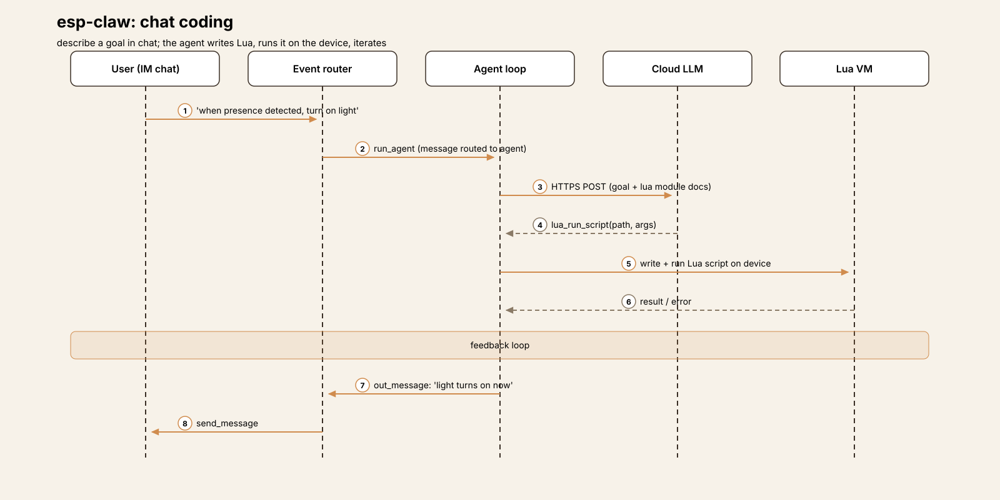

Embedded Harness Anatomy E1: ESP-Claw — the agent loop that waits for an invitation
Series: Embedded Harness Anatomy — top-down dissections of agent
harnesses that run on microcontrollers, grounded in verifiable pinned
firmware. Every behavioral claim below carries a footnote to a pinned
GitHub permalink; the full evidence lives in the endnotes.
Version block
- Repo: espressif/esp-claw
- Pinned: tag
v0.1.0→142bf3f318781708700aed51793a12ea47f46150(2026-06-12)1 - Language: C, on ESP-IDF (Espressif's IoT Development Framework —
- License: Apache-2.02
- Claim under test: the reference design for this series — "Chat
the SDK and build system for ESP32 chips). The docs require ESP-IDF v5.5.4 to build; the checked-in sdkconfig.defaults was generated under v5.5.123
Coding": defining device behavior through conversation, completing the full loop of sensing, reasoning, decision-making, and execution on Espressif chips4
Scale, for orientation: the recon surveyed roughly 557 source and doc files under components/, application/, and docs/src/content. The big files are claw_event_router.c (2,949 lines) and claw_core_agent_loop.c (513 lines) — which already tells you where the complexity lives: the event bus, then the agent loop5.
Hardware block
ESP-Claw targets four ESP32-family SoCs (systems-on-chip — the microcontroller plus radio plus memory interfaces on one die), with 30 board definitions in the tree:6
| SoC | Boards | Notes |
|---|---|---|
| ESP32-S3 | 17 | Primary target. Docs require >= 8 MB flash + >= 8 MB PSRAM7; recommended board ESP32-S3-DevKitC-1, variant N8R8 (8 MB flash, 8 MB octal PSRAM) |
| ESP32-P4 | 7 | e.g. esp32_p4_eye: 16 MB QIO flash, hex SPIRAM clocked at 200 MHz8 |
| ESP32-C5 | 5 | e.g. DFRobot FireBeetle 2 C5 display board |
| ESP32-S31 | 1 | esp32_s31_korvo1 |
Reference boards in the tree include the ESP32-S3-DevKitC-1 (plus N32R16V and breadboard variants), ESP32-S3-Korvo-1, ESP-BOX-3, M5Stack CoreS3 / StickS3 / Tab5, DFRobot FireBeetle 2 (S3/P4/C5), LilyGo T-Display S3/P4, Waveshare ESP32-S3/P4 boards, ESP32-P4-EYE, ESP32-P4-Function-EV, Movecall boards, and Nologo xingzhi_3956.
Flash layout is explicit: the tree ships partitions_8MB.csv, partitions_16MB.csv, and partitions_32MB.csv partition tables, and the S3 DevKitC-1 default build uses the 8 MB table9. PSRAM (pseudo-static RAM — an external RAM chip wired to the SoC, much larger than the hundreds-of-KB internal SRAM but slower) is load-bearing: the prompt, the Lua VM, and the TLS buffers all live or die by it. Internal SRAM size is not stated in the repo's docs — marked [UNVERIFIED]6.
Two logical filesystem roots are enforced everywhere: a read-only /system (firmware-baked skills, Lua libraries, .recovery seed files) and a writable DATA root (/fatfs on internal flash, or an SD card mount when present) holding skills, router rules, scheduler state, sessions, memory, and the inbox10.

Explore the interactive architecture diagram 14 nodes, 22 edges — on-chip vs cloud, pan, zoom, and follow every subsystem linkHarness concepts
A five-line box for embedded readers — the harness ideas this teardown uses, translated to this device:
- Turn loop: there isn't one, as the primary construct. A fast event
- Tool dispatch: the capability registry (
claw_cap) — named - Approvals: there are none. No approve/deny step exists anywhere in
- Memory: on-chip and file-backed — append-only JSONL records, a
- Tools that move hardware: three tiers — model calls C directly,
loop routes everything; a separate agent loop task runs only when an event is routed to it. The LLM is a service the router calls, not the driver of the system.
descriptors (name, description, JSON input schema, C execute function). Before the model ever sees a tool, a six-check eligibility chain decides whether it is LLM-visible this session.
the code. Safety is architectural: per-session tool visibility, skill-scoped capability groups, an HTTP allowlist.
keyword index, and compaction designed around flash wear, plus per-session histories and persona files.
model calls a Lua script that touches hardware, or a deterministic router rule / Lua callback acts with no LLM in the path at all.
The mental model
ESP-Claw is a reactive embedded system first and an agent second. Every input — an instant message, a schedule tick, a boot event, a Lua script publishing an event — lands on an event bus. Router rules, evaluated in file order, decide what happens next, and the fast paths (call_cap, run_script, send_message, drop) complete in milliseconds with no LLM involved. Only when a rule says run_agent (or the default route catches an unmatched message) does the on-demand agent loop wake up, make HTTPS calls to a cloud LLM, and publish its reply back onto the same bus1112.
The governing tradeoff is latency-shaped: the cloud round-trip takes seconds, and an embedded device cannot stall its inputs for seconds. So the architecture splits into two loops with two queues and one bus — a millisecond local loop that never blocks on the model, and a seconds-long cloud loop that the router submits to asynchronously and forgets about until the reply arrives as just another event1113.
Event model

The event shape is claw_event_t: fixed-size string buffers throughout (event_id[48], source_cap[32], chat_id[96], …) plus int64_t timestamp_ms and two heap pointers (text, payload_json). The embedded constraint is visible in the data structure itself — bounded stack fields, unbounded content only where it can't be avoided14.
Publishing has three entry points: full events, IM-style text events, and scheduler/boot-style triggers15. Producers verified in code: the IM gateways (Telegram publishes inbound text as source_cap="tg_gateway", attachments as attachment_saved events)15, the scheduler (which builds events from schedule entries and calls the router's bound publish function)16, Lua scripts (an event_publisher module with publish/publish_message/publish_trigger)17, the boot sequence (startup/boot_completed)18, the router itself (the emit_event action re-injects events), claw_core (agent replies), and the CLI/console and local web gateways15.
The router task blocks on a FreeRTOS queue with a 250 ms receive timeout, skipping cancelled events via a pending-cancellation table; queue length, task stack size, priority, and core affinity are all configurable19. Rules live in router_rules/router_rules.json on the DATA root (recovery seed in the firmware image), and rule order in the file is evaluation order20. Match fields are event_type, event_key, source_cap, channel, chat_id, content_type, and text, with exact or prefix matching; prefix rules left-trim the text and expose {{match.remainder}}, and {{match.text}}, {{match.rule}}, and {{event.*}} templates render action inputs21.
Six action kinds exist:21
| Kind | JSON type | Effect |
|---|---|---|
CALL_CAP | call_cap | Invoke a capability without the LLM |
RUN_AGENT | run_agent | Async-submit to claw_core |
RUN_SCRIPT | run_script | Run a Lua script (no LLM) |
SEND_MESSAGE | send_message | Outbound IM via channel binding |
EMIT_EVENT | emit_event | Re-inject a new event into the bus |
DROP | drop | Swallow the event |
run_agent renders the rule's input_json against the event context, builds an agent input with flags PUBLISH_OUT_MESSAGE | PUBLISH_STAGE_MESSAGE | SKIP_RESPONSE_QUEUE | USER_INTERRUPT, and submits it to the agent manager with a timeout — asynchronously, so the router moves on immediately and the reply returns later as an out_message event22. When LLM settings are complete, a default_route_messages_to_agent config sends unmatched messages to the agent automatically23.
The seed rules show the idioms: /session and /llm prefix commands dispatched straight to capabilities, an im_any_message_working_reply rule that sends an immediate "working on it" reply before any other handling (the latency UX for a seconds-long cloud loop), and a disabled boot rule that would run a Lua script on startup with no LLM involved24. Rules are hot-manageable — add, update, delete, list, get — and cap_router_mgr exposes that management surface as LLM-callable tools, registered LLM-visible by default: the model can rewrite its own routing25.
So "the loop" is actually two loops. The event loop drains the queue and executes rules — millisecond-scale for every path that skips the LLM, which is the source of the README's "Response can be as fast as milliseconds" claim12. The agent loop is a separate FreeRTOS task blocking on its own request queue; each request runs the classic LLM tool-call cycle, and only events whose rule says run_agent (or the default route) ever enter it26.
Interrupts exist only as user interrupts within an in-flight agent run: an insert queue is drained at four timing points in the loop — before building iteration context, before the LLM HTTP call, inside an aborted HTTP call, and after the LLM call before tool execution — so a new user message (e.g. "Stop") can redirect the current iteration. Interrupt sources are the CLI and the IM channels27.
One event, end to end
The following is the representative path for a Telegram user typing "turn on the light", assembled from the documented pieces — each hop below is pinned, but this is a reconstruction of the flow, not a recorded trace:
- Ingress.
cap_im_tgreceives the message and publishes an inbound - Route. The router task dequeues it and evaluates rules in file
- Agent loop wakes.
claw_core_agent_loop_tasktakes the request off - LLM call (the slow part).
text event with source_cap="tg_gateway"15.
order. The seed's working-reply rule fires first ("working on it" goes back immediately, buying seconds for the cloud loop)24. No command rule matches, so the default route submits the event to the agent with run_agent2223.
its queue26. Context is built: the configured system prompt, plus one appended section per context provider (memory profile, long-term memory, session history, the skills list, the tool descriptors), plus a "Core Request" section carrying the triggering event's text and source metadata28. Tools are serialized in OpenAI Responses-API format (name + input_schema)29.

A single blocking HTTPS POST carries the full JSON body — no streaming; the whole response is buffered then parsed30. (If the LLM token was never configured, the loop short-circuits here with a user-facing "LLM API token is not configured…" message rather than failing silently31.) Mid-run, the loop publishes stage events — per-round notes and per-tool-call announcements — so the user sees progress like a typing indicator; verbosity is a Kconfig choice32.
- Tool call. The model calls
lua_run_script. The seed - Reply becomes an event. On finish, the loop builds an
out_message
light_switch skill tells it exactly how: the script path {CUR_SKILL_DIR}/scripts/led_strip_switch.lua and the arg schema live in the skill's SKILL.md, so the model-to-hardware path is model -> Lua -> LED strip33. The call executes against the capability registry, results are appended, the iteration counter increments, and a hard cap of 10 tool iterations bounds the loop34.
event (source_cap="claw_core", content_type="text", chat session policy, correlation_id set to the source message id) and publishes it back onto the bus; the router's rules send_message it through the outbound Telegram binding35. The agent's output is just another event.
If the user sends "Stop" mid-run, the message feeds the insert queue and is drained at one of the four timing points, redirecting the in-flight iteration27.
Follow one sensor event through ESP-Claw A 10-step trace: Telegram message → event router → agent loop → cloud LLM → Lua tool → GPIO actuation → replySubsystem inventory
LLM backends (cloud-only)
Compute placement: the LLM never runs on the chip. All three backends are HTTPS clients: an OpenAI-compatible backend (OpenAI Responses-style API), an Anthropic backend (Messages API), and a custom backend for user-supplied shapes36. Presets cover DeepSeek (deepseek-chat), OpenAI (gpt-4o-mini), Qwen (qwen-plus on the OpenAI-compatible interface), and Anthropic (claude-3-5-haiku-latest), plus a /llm setup custom command for arbitrary URL/model/token triples — all stored in NVS (non-volatile storage: a small key-value flash partition ESP-IDF reserves for settings)36.
Transport is a single blocking esp_http_client_perform POST of the full JSON body — no streaming; the whole response is buffered, then parsed30. Context growth is bounded by session-size and message-char limits, not by model context windows: a 4096-char per-message cap, a 150 KB session history size limit, and no token counting or prompt truncation logic anywhere in claw_core37. Whether any backend enforces a max-tokens cap beyond the configurable max_tokens field in the LLM config is [UNVERIFIED]37.
The agent loop's core cycle: build iteration context -> HTTPS call -> tool_call_count == 0 means finalize (stage note, persist, break); otherwise append the assistant tool-call message, execute each call against claw_cap, append tool results, persist the round, and iterate up to the 10-iteration cap, after which the loop errors with "cap tool iteration limit reached"34. Completion observers and context persistence fire on success; on failure, a failure trace is persisted as a memory note — failures become memory34.
MCP as server AND client — split across two firmware images
The edge_agent app consumes MCP: cap_mcp_client registers mcp_list_tools, mcp_call_tool, and mcp_discover, all callable by the LLM, with discovery done over mDNS (multicast DNS — LAN service discovery, no central registry) so the on-device agent can call tools on remote MCP servers, e.g. a PC on the same network38.

The server side is a separate firmware image. cap_mcp_server has no group registration and does not appear in edge_agent's capability table — the docs' mention of it in the app_claw wiring is stale. Instead, application/mcp_server_point/ is its own app, built on espressif/mcp-c-sdk ^2.0.0 with HTTP transport and mDNS advertisement, exposing six lua.* tools: lua.run_script, lua.run_script_async, lua.list_async_jobs, lua.get_async_job, lua.stop_async_job, and lua.stop_all_async_jobs39.
So the "server and client" story is real but spans two firmware images: a second ESP32 (or the same board reflashed) serves Lua execution over MCP, and the edge agent consumes it. One curiosity: cap_mcp_client is LLM-invisible by default (it sits in the defaults-OFF group with the IM groups and session manager), so the model can only reach remote MCP tools when a session explicitly enables the group40.
Lua scripting — not sandboxed, instruction-counted
Lua is the device's scripting layer and the model's favorite tool: 36 registered lua_module_*/lua_driver_* modules cover GPIO (direction, level read/write), ADC, I2C, UART, MCPWM, pulse counters, RMT, touch thresholds, plus high-level LED strip, button, knob, IMU, magnetometer, environmental sensor, fuel gauge, camera, vision, audio, display/LVGL, IR, BLE, and system modules (delay, thread, JSON, storage, HTTP server)41.
Lua is not language-sandboxed: the VM is created with luaL_newstate() + luaL_openlibs(), so scripts get the full Lua standard library including os, io, and debug. Containment is by execution control, not language restriction: an instruction-count hook (lua_sethook with LUA_MASKCOUNT every 100 instructions) enforces timeout_ms deadlines, and the exec-context pointer lives in the VM's LUA_EXTRASPACE — unreachable from Lua even via debug.getregistry() — so a script cannot disable its own timeout42. JSON argument conversion is depth-capped at 64 to protect the small Lua task stack42. Async runs support named jobs, exclusive mutex groups (e.g. 'display'), and replace takeover; hardware exists only through the registered native modules, file access goes through the storage module's DATA-root helpers, and writable scripts live only under /fatfs/scripts/42.
Two bridges make Lua a full citizen of the harness: event_publisher lets scripts publish events onto the bus (publish, publish_message, publish_trigger), and capability.call(cap_name, payload_json) lets Lua invoke any capability — Lua runs as CLAW_CAP_CALLER_SYSTEM, so it can call anything, including lua_run_script itself43. Button, knob, and touch callbacks stay inside the Lua VM (button.on(...) plus button.dispatch() polling): local reactive behavior never needs to round-trip through the event bus, and scripts bridge to the bus via event_publisher only when they want agent or IM involvement41. cap_lua exposes the same engine to the model (lua_run_script sync, lua_run_script_async, job list/get/tail/stop), and the router's run_script action invokes it directly — the local fast path with no LLM44.
Memory: JSONL on flash, compaction for wear
Memory is on-chip and file-backed on the DATA root: memory_records.jsonl (append-only structured records), memory_index.json (v3 index: labeled, ref-counted summaries plus a keyword index), memory_digest.log (append-only op digest), MEMORY.md (human-readable, read-only), soul.md/identity.md/user.md (persona/profile), and per-session JSONL histories under sessions/<id>/45.

The write path appends records and the digest, then rewrites the index — append-only for the hot path, a full index rewrite for the derived structure45. Compaction is the flash-wear answer: flash (NAND) cells degrade after roughly 10k–100k write cycles, so storage can't be treated like a disk, and the design rewrites the records file once accumulated writes since the last compaction reach a threshold. The exact threshold value is [UNVERIFIED] — the recon's compaction section was truncated mid-sentence at write_changes_since_compact ≥45.
Session history feeds the prompt through a dedicated context provider, and the provider system caches per-request (REQUEST_START_ONLY) so memory sections are assembled once per agent request, not once per iteration28.
Channels and ingress
Four IM capability groups — Telegram, QQ, Feishu, WeChat — plus cap_im_local (a web gateway) and the serial CLI/console all publish inbound text events onto the bus46. Wi-Fi setup is STA (station — the device joins your access point as a client) plus a SoftAP (software access point — the device hosts its own network) for browser-based configuration and offline operation; on Wi-Fi failure the boot sequence logs and continues, because offline rules and Lua keep running18. Outbound, send_message actions route through per-channel bindings — the agent's out_message event is addressed to target_channel / target_chat_id and the router delivers it35.
Chat-coding: conversation -> Lua
ESP-Claw's headline idea, and the docs' own term: Chat Coding. "Define device behavior through conversation," in the Vibe Coding mold — no boilerplate, no compile-flash-debug loop for the common case. The docs frame it as three principles: intent first, not syntax first (describe the feature and how the user interacts with it); run first, refine later (a working script beats a perfect architecture); and keep the feedback loop, because chat coding is explicitly not "ask once and get a perfect application"47.

Mechanically, chat-coding is the model writing Lua into the managed script root (/fatfs/scripts/), invoked through lua_run_script / lua_run_script_async, with skills carrying the arg schemas that make the model's output well-formed (the light_switch pattern)3344. The same docs page documents the escape hatch that makes the economics work: router "custom shortcuts" that match an input and execute without waking the large model — faster response and lower power consumption47. Conversation builds the behavior; deterministic rules absorb the steady-state traffic.
Cloud skills extend the library at runtime: skills can be fetched and installed after deployment, and a skill_builder component plus an auto-generated builtin_lua_modules skill (Lua module docs and tests bundled by a generator script) keep the model's picture of the hardware surface current48.
Extension points and update mechanism
The extension surface is layered by how hot it is:
- Skills (hot):
claw_skillscans/system/skills/(firmware-baked) - Router rules (hot): add/update/delete/list/get over commands or the
- Lua scripts (hot): dropped into
/fatfs/scripts/, run sync or as - Configuration (warm, needs reboot): NVS holds Wi-Fi, LLM, IM,
- Firmware (cold): reflash. The documented paths are the web flasher
and /fatfs/skills/ (user; wins on id conflict) for SKILL.md. Front-matter carries cap_groups — which capability groups the skill unlocks for the model — and manage_mode (readonly | runtime). Cloud skills can be fetched and installed at runtime48.
console, and — since cap_router_mgr is LLM-visible by default — by the model itself25.
named async jobs with mutex groups44.
search, and timezone settings; the LLM-visible and enabled capability groups are NVS-configurable, and sessions can override visibility3640. Notably, the agent stack only starts when llm_api_key, llm_model, and llm_backend_type are all set — otherwise a warning is logged and agent features stay unavailable until configured and rebooted18.
and idf.py flash monitor; a tree-wide search of the pinned tag found no OTA (over-the-air) updater in the app code — cap_system exposes a restart capability, not an updater49. The /system/.recovery seeds (router rules, skills) give every fresh flash sane defaults10.
Tradeoffs
No approval gate — safety is architectural. Nothing in claw_cap, claw_core, or the router implements approve/deny; once a tool is LLM-visible the model may call it freely, bounded only by the 10-iteration cap. The full extent of gating is the six-check eligibility chain, the per-session LLM-visible sets, skill-scoped cap_groups, and an HTTP allowlist40. On a device whose tool calls move servos and write GPIO pins, that is a deliberate bet: correctness comes from constraining what the model can see, not from asking a human to confirm what it does.
No sleep modes in the app code. A tree-wide search found no deep-sleep or light-sleep API usage in the application or components — ESP-Claw is an always-on FreeRTOS design: the router task blocks on its queue with a 250 ms timeout, the agent task blocks on its request queue, and Wi-Fi stays associated5019. The proposal's power-envelope dimension is the honest gap here: no current-draw numbers (mA) appear in the repo, so the always-on budget is [UNVERIFIED] — the "lower power consumption" claim for shortcuts is qualitative47.
Offline means rules-without-LLM. Wi-Fi failure is logged and the device continues; the LLM loop short-circuits without a token; and every rule action except run_agent needs no network at all1831. The degraded mode is coherent because the fast path was never the LLM path — it was the rules and the Lua VM all along.
Seconds, admitted. The transport is a single blocking POST with the entire response buffered — no streaming — so the cloud loop is measured in seconds, and the architecture says so out loud: the seed "working" reply, the stage-note events, the Kconfig verbosity switch are all UX machinery for a slow loop3032. The millisecond claim belongs strictly to the local paths12.
Memory budgets are chars and KB, not tokens. 4096 chars per message, 150 KB of session history, fixed-size event buffers, no token counting — context growth is bounded by what fits in RAM, not by what the model accepts3714. And the flash-wear answer is structural (append + compact) rather than incidental45.
Lua is powerful, not contained. Full standard library, os/io/ debug included, capability.call reaching any capability as SYSTEM — containment is the instruction-count timeout and the module allowlist, not the language4243. On a device with no MMU-based process isolation, that is the honest shape of the sandbox: execution control, not language restriction.
Comparison row
1. Compute placement — cloud-only. The LLM never runs on the chip: three HTTPS backends (OpenAI-compatible, Anthropic, custom), presets down to claude-3-5-haiku-latest and gpt-4o-mini, config in NVS. Everything downstream — the seconds-long loop, the offline story, the stage-note UX — follows from this single placement decision3630.
2. Power envelope — always-on, unmeasured. No deep-sleep or light-sleep API appears in the app code; the design is two FreeRTOS tasks blocking on queues (the router's receive times out every 250 ms) with Wi-Fi associated5019. No current-draw numbers appear in the repo, so the always-on budget is [UNVERIFIED] — the "lower power consumption" of shortcuts is qualitative, and the recon found no mA figures to pin47.
3. Connectivity dependence — degraded by design. Offline, the device is rules-without-LLM: router actions, Lua scripts, and the scheduler need no network; the agent loop short-circuits without a token; Wi-Fi failure is logged, not fatal1831. The graceful part is that the fast path was never the network path — shortcuts are documented as executing "without waking the large model"47.
4. Event model — bus first, loop on demand. The primary construct is an event bus with ordered rules and six action kinds; the turn loop exists as a separate task that only runs when routed to, and its output is just another event on the bus2113. Desktop harnesses are turn loops with interrupts bolted on; here the interrupts (messages, schedule ticks, boot) are the architecture and the loop is the attachment.
5. Sensor/actuator interface — three tiers to the physical world. Model-to-C for native capabilities, model-to-Lua-script for hardware through 36 registered modules (GPIO, ADC, I2C, touch, LED strip, camera, BLE…), and deterministic router rules or Lua-local callbacks that skip the LLM entirely414433. Remote tools arrive over mDNS-discovered MCP, consumed by one firmware image and served by another3839.
6. Model footprint — the prompt is the footprint. No model lives on device, so there is no quantization story; the footprint question is how many KB of PSRAM the prompt fits in. The answer is schema: 4096 chars per message, 150 KB of session history, fixed-size event buffers, no token counting anywhere3714.
7. Memory architecture — JSONL on flash, wear-aware. Append-only records plus digest, a rewritten v3 keyword index, per-session histories, and compaction that rewrites the records file once accumulated writes cross a threshold — the threshold value itself is [UNVERIFIED], the recon was truncated mid-sentence at it45. Persona and profile files (soul.md, identity.md, user.md) ride along in the same tree.
8. Update mechanism — reflash for firmware, chat for behavior. Firmware updates are a reflash (web flasher or idf.py flash monitor); no OTA updater exists in the app code49. Above that cold layer, behavior is hot: user skills on /fatfs, router rules the model itself can rewrite, Lua scripts dropped into the managed root — and chat-coding, conversation that compiles down to running Lua, as the genuinely novel update path48254447.
9. Real-time constraints — milliseconds local, seconds admitted. Router-rule and Lua paths are millisecond-scale (the README's claim); the cloud loop is seconds, bridged by an immediate working-reply and mid-run stage notes1232. Lua scripts get instruction-count timeouts, and user interrupts drain at four timing points inside an in-flight run4227.
10. Failure & safety — architecture, not interaction. No approval gate; the model is bounded by the 10-iteration cap and by what it can see, and failure traces are persisted as memory notes4034. Lua runs unsandboxed-as-a-language with execution-control containment, and every tool call can move real hardware — while API keys sit in NVS flash, the credential-handling callout this dimension demands4236.
What transfers
What embedded teaches harness design. The on-demand agent loop is the big one: desktop harnesses make the LLM the driver and bolt on interrupts; ESP-Claw makes the event bus the driver and calls the LLM as a service, which is why its degraded mode is coherent instead of a special case. Visibility gating as a safety mechanism — constraining what the model can see rather than asking a human to confirm what it does — deserves a hearing in desktop harnesses that currently gate everything through approve/deny dialogs. And failures-as-memory (persist the failure trace as a note, not just a log line) is a small idea any harness can steal.
What harness design teaches embedded. The capability registry's eligibility chain shows how to make "which tools exist right now" a first-class, session-scoped decision instead of a compile-time one. Skills as capability-scoped packages (front-matter declaring exactly which tool groups a skill unlocks) are a cleaner extension contract than dropping scripts in a directory. And the memory subsystem — structured records, keyword index, wear-aware compaction — is what "logging to flash" grows up into when an agent has to remember across reboots.
Endnotes
-
Pinned tag
v0.1.0(2026-06-12), commit142bf3f318781708700aed51793a12ea47f46150: https://github.com/espressif/esp-claw/tree/142bf3f318781708700aed51793a12ea47f46150 ↩ -
C sources under
components/: https://github.com/espressif/esp-claw/blob/142bf3f318781708700aed51793a12ea47f46150/components; license: https://github.com/espressif/esp-claw/blob/142bf3f318781708700aed51793a12ea47f46150/LICENSE ↩ -
Build docs require ESP-IDF v5.5.4: https://github.com/espressif/esp-claw/blob/142bf3f318781708700aed51793a12ea47f46150/docs/src/content/docs/en/reference-project/build-from-source.mdx#L21-L22; the checked-in
application/edge_agent/sdkconfig.defaultsheader records generation under ESP-IDF 5.5.1. ↩ -
"ESP-Claw is a Chat Coding AI agent framework for IoT devices… the full loop of sensing, reasoning, decision-making, and execution locally on Espressif chips": https://github.com/espressif/esp-claw/blob/142bf3f318781708700aed51793a12ea47f46150/docs/src/content/docs/en/tutorial/index.mdx#L16 ↩
-
claw_event_router.c(2,949 lines): https://github.com/espressif/esp-claw/blob/142bf3f318781708700aed51793a12ea47f46150/components/claw_modules/claw_event_router/src/claw_event_router.c;claw_core_agent_loop.c(513 lines): https://github.com/espressif/esp-claw/blob/142bf3f318781708700aed51793a12ea47f46150/components/claw_modules/claw_core/src/claw_core_agent_loop.c ↩ -
Board tree (17 ESP32-S3, 7 ESP32-P4, 5 ESP32-C5, 1 ESP32-S31; 30 board definitions total; recommended ESP32-S3-DevKitC-1 variant N8R8; reference boards listed): https://github.com/espressif/esp-claw/tree/142bf3f318781708700aed51793a12ea47f46150/application/edge_agent/boards. Internal SRAM size is not stated in the repo — [UNVERIFIED]. ↩
-
Minimum 8 MB flash + 8 MB PSRAM for ESP32-S3: https://github.com/espressif/esp-claw/blob/142bf3f318781708700aed51793a12ea47f46150/docs/src/content/docs/en/tutorial/bom.mdx ↩
-
esp32_p4_eye: 16 MB QIO flash, hex SPIRAM at 200 MHz: https://github.com/espressif/esp-claw/blob/142bf3f318781708700aed51793a12ea47f46150/application/edge_agent/boards/espressif/esp32_p4_eye/sdkconfig.defaults.board ↩ -
Partition tables
partitions_8MB.csv/16MB/32MB; S3 DevKitC-1 default build selects the 8 MB table viaCONFIG_PARTITION_TABLE_CUSTOM_FILENAME: https://github.com/espressif/esp-claw/blob/142bf3f318781708700aed51793a12ea47f46150/application/edge_agent/partitions_8MB.csv ↩ -
Runtime path rules (
/systemread-only vs DATA root writable): https://github.com/espressif/esp-claw/blob/142bf3f318781708700aed51793a12ea47f46150/AGENTS.md ↩ -
Router task drains the queue and evaluates rules;
run_agentsubmits asynchronously to the agent manager: https://github.com/espressif/esp-claw/blob/142bf3f318781708700aed51793a12ea47f46150/components/claw_modules/claw_event_router/src/claw_event_router.c#L2258-L2285, https://github.com/espressif/esp-claw/blob/142bf3f318781708700aed51793a12ea47f46150/components/claw_modules/claw_event_router/src/claw_event_router.c#L1795 ↩ -
"Response can be as fast as milliseconds" (local paths): https://github.com/espressif/esp-claw/blob/142bf3f318781708700aed51793a12ea47f46150/README.md#L63 ↩
-
Separate agent-loop task on its own request queue; agent output published back as an
out_messageevent: https://github.com/espressif/esp-claw/blob/142bf3f318781708700aed51793a12ea47f46150/components/claw_modules/claw_core/src/claw_core_agent_loop.c#L136, https://github.com/espressif/esp-claw/blob/142bf3f318781708700aed51793a12ea47f46150/components/claw_modules/claw_core/src/claw_core_events.c#L173 ↩ -
claw_event_t, fixed-size buffers: https://github.com/espressif/esp-claw/blob/142bf3f318781708700aed51793a12ea47f46150/components/claw_modules/claw_event_router/include/claw_event.h#L15-L34 ↩ -
Publish entry points and the Telegram inbound publisher: https://github.com/espressif/esp-claw/blob/142bf3f318781708700aed51793a12ea47f46150/components/claw_modules/claw_event_router/include/claw_event_publisher.h#L20-L26, https://github.com/espressif/esp-claw/blob/142bf3f318781708700aed51793a12ea47f46150/components/claw_capabilities/cap_im_platform/src/cap_im_tg.c#L252-L261 ↩
-
Scheduler builds events from schedule entries: https://github.com/espressif/esp-claw/blob/142bf3f318781708700aed51793a12ea47f46150/components/claw_capabilities/cap_scheduler/src/cap_scheduler.c#L426-L519 ↩
-
Lua
event_publishermodule (string form setssource_cap="lua_script"automatically): https://github.com/espressif/esp-claw/blob/142bf3f318781708700aed51793a12ea47f46150/components/lua_modules/lua_module_event_publisher/README.md ↩ -
Boot brings up the agent stack and publishes
startup/boot_completed; Wi-Fi failure logs and continues (offline rules/Lua keep running); the agent stack only starts whenllm_api_key,llm_model, andllm_backend_typeare all set: https://github.com/espressif/esp-claw/blob/142bf3f318781708700aed51793a12ea47f46150/components/common/app_claw/app_claw.c#L285-L290, https://github.com/espressif/esp-claw/blob/142bf3f318781708700aed51793a12ea47f46150/application/edge_agent/main/main.c#L360-L370 ↩ -
Router task config (queue length, stack, priority, core): https://github.com/espressif/esp-claw/blob/142bf3f318781708700aed51793a12ea47f46150/components/claw_modules/claw_event_router/src/claw_event_router.c#L2258-L2285, https://github.com/espressif/esp-claw/blob/142bf3f318781708700aed51793a12ea47f46150/components/claw_modules/claw_event_router/src/claw_event_router.c#L2335 ↩
-
Rules live in
router_rules/router_rules.json; file order is evaluation order; seed recovery copy in the firmware image: https://github.com/espressif/esp-claw/blob/142bf3f318781708700aed51793a12ea47f46150/docs/src/content/docs/en/reference-project/dataflow-and-automation.mdx, https://github.com/espressif/esp-claw/blob/142bf3f318781708700aed51793a12ea47f46150/application/edge_agent/fatfs_image/system/.recovery/router_rules/router_rules.json ↩ -
Six action kinds, match fields, exact/prefix text matching: https://github.com/espressif/esp-claw/blob/142bf3f318781708700aed51793a12ea47f46150/components/claw_modules/claw_event_router/include/claw_event_router.h#L55-L62, https://github.com/espressif/esp-claw/blob/142bf3f318781708700aed51793a12ea47f46150/components/claw_modules/claw_event_router/include/claw_event_router.h#L69-L78, https://github.com/espressif/esp-claw/blob/142bf3f318781708700aed51793a12ea47f46150/components/claw_modules/claw_event_router/include/claw_event_router.h#L45-L52 ↩
-
run_agentrendersinput_jsonand submits withPUBLISH_OUT_MESSAGE | PUBLISH_STAGE_MESSAGE | SKIP_RESPONSE_QUEUE | USER_INTERRUPT: https://github.com/espressif/esp-claw/blob/142bf3f318781708700aed51793a12ea47f46150/components/claw_modules/claw_event_router/src/claw_event_router.c#L1739-L1830 ↩ -
default_route_messages_to_agent: https://github.com/espressif/esp-claw/blob/142bf3f318781708700aed51793a12ea47f46150/components/claw_modules/claw_event_router/include/claw_event_router.h#L35 ↩ -
Seed rules (
/session,/llm, working-reply, disabled boot Lua rule): https://github.com/espressif/esp-claw/blob/142bf3f318781708700aed51793a12ea47f46150/application/edge_agent/fatfs_image/system/.recovery/router_rules/router_rules.json ↩ -
Rule hot-management API;
cap_router_mgrLLM-visible by default: https://github.com/espressif/esp-claw/blob/142bf3f318781708700aed51793a12ea47f46150/components/claw_modules/claw_event_router/include/claw_event_router.h#L105-L125, https://github.com/espressif/esp-claw/blob/142bf3f318781708700aed51793a12ea47f46150/components/common/app_claw/app_capabilities.c#L726 ↩ -
Agent loop task and request queue: https://github.com/espressif/esp-claw/blob/142bf3f318781708700aed51793a12ea47f46150/components/claw_modules/claw_core/src/claw_core_agent_loop.c#L101-L136 ↩
-
User interrupts drained at four timing points: https://github.com/espressif/esp-claw/blob/142bf3f318781708700aed51793a12ea47f46150/components/claw_modules/claw_core/src/claw_core_agent_loop.c#L19-L99 ↩
-
Iteration context: system prompt + one section per context provider (+ per-provider logging),
REQUEST_START_ONLYcaching, Core Request section: https://github.com/espressif/esp-claw/blob/142bf3f318781708700aed51793a12ea47f46150/components/claw_modules/claw_core/src/claw_core_context.c#L473-L610, https://github.com/espressif/esp-claw/blob/142bf3f318781708700aed51793a12ea47f46150/components/claw_modules/claw_core/src/claw_core_context.c#L505-L529 ↩ -
Tools serialized in OpenAI Responses-API format: https://github.com/espressif/esp-claw/blob/142bf3f318781708700aed51793a12ea47f46150/components/claw_modules/claw_cap/src/claw_cap.c#L337-L400 ↩
-
Single blocking POST, no streaming, full response buffered: https://github.com/espressif/esp-claw/blob/142bf3f318781708700aed51793a12ea47f46150/components/claw_modules/claw_core/src/claw_llm_http_transport.c#L266-L376 ↩
-
"LLM API token is not configured…" short-circuit: https://github.com/espressif/esp-claw/blob/142bf3f318781708700aed51793a12ea47f46150/components/claw_modules/claw_core/src/claw_core_llm.c#L92-L115 ↩
-
Per-round and per-tool-call stage notes; Kconfig verbosity: https://github.com/espressif/esp-claw/blob/142bf3f318781708700aed51793a12ea47f46150/components/claw_modules/claw_core/src/claw_core_agent_loop.c#L334, https://github.com/espressif/esp-claw/blob/142bf3f318781708700aed51793a12ea47f46150/components/claw_modules/claw_core/src/claw_core_agent_loop.c#L362 ↩
-
light_switchskill pins the script path and arg schema: https://github.com/espressif/esp-claw/blob/142bf3f318781708700aed51793a12ea47f46150/application/edge_agent/fatfs_image/storage/skills/light_switch/SKILL.md ↩ -
Tool-call cycle, 10-iteration cap, failure traces persisted as memory notes: https://github.com/espressif/esp-claw/blob/142bf3f318781708700aed51793a12ea47f46150/components/claw_modules/claw_core/src/claw_core_agent_loop.c#L318-L491, https://github.com/espressif/esp-claw/blob/142bf3f318781708700aed51793a12ea47f46150/components/claw_modules/claw_core/src/claw_core_internal.h#L33 ↩
-
out_messageevent construction and publish: https://github.com/espressif/esp-claw/blob/142bf3f318781708700aed51793a12ea47f46150/components/claw_modules/claw_core/src/claw_core_events.c#L62-L91, https://github.com/espressif/esp-claw/blob/142bf3f318781708700aed51793a12ea47f46150/components/claw_modules/claw_core/src/claw_core_events.c#L156-L173 ↩ -
Three HTTPS backends; presets (DeepSeek/OpenAI/Qwen/Anthropic) and custom setup; config in NVS: https://github.com/espressif/esp-claw/tree/142bf3f318781708700aed51793a12ea47f46150/components/claw_modules/claw_core/src/llm/backends, https://github.com/espressif/esp-claw/blob/142bf3f318781708700aed51793a12ea47f46150/components/claw_capabilities/cap_llm_config/src/cap_llm_config.c#L40-L112 ↩
-
4096-char message cap, 150 KB session history limit, no token counting: https://github.com/espressif/esp-claw/blob/142bf3f318781708700aed51793a12ea47f46150/components/claw_modules/claw_memory/src/claw_memory_internal.h#L22-L30. Whether any backend enforces
max-tokensbeyond the configurablemax_tokensfield — [UNVERIFIED]. ↩ -
MCP client tools and mDNS discovery: https://github.com/espressif/esp-claw/blob/142bf3f318781708700aed51793a12ea47f46150/components/claw_capabilities/cap_mcp_client/src/cap_mcp_client.c#L230-L252, https://github.com/espressif/esp-claw/blob/142bf3f318781708700aed51793a12ea47f46150/components/claw_capabilities/cap_mcp_client/src/cap_mcp_discover_core.c#L72-L101 ↩
-
Server is the separate
mcp_server_pointapp (espressif/mcp-c-sdk ^2.0.0, HTTP + mDNS);cap_mcp_serverhas no group registration in edge_agent's capability table; sixlua.*tools: https://github.com/espressif/esp-claw/blob/142bf3f318781708700aed51793a12ea47f46150/components/claw_capabilities/cap_mcp_server/idf_component.yml#L4, https://github.com/espressif/esp-claw/blob/142bf3f318781708700aed51793a12ea47f46150/components/claw_capabilities/cap_mcp_server/include/cap_mcp_server.h#L54-L55, https://github.com/espressif/esp-claw/blob/142bf3f318781708700aed51793a12ea47f46150/components/common/app_claw/app_capabilities.c#L681-L789, https://github.com/espressif/esp-claw/blob/142bf3f318781708700aed51793a12ea47f46150/application/mcp_server_point/components/mcp_server_point_tools/cap_mcp_lua.c#L270-L316 ↩ -
Six-check tool eligibility chain and per-session LLM-visible sets (defaults ON/OFF, NVS-configurable, session-overridable); no approve/deny gate exists — the eligibility chain is the full extent of tool gating: https://github.com/espressif/esp-claw/blob/142bf3f318781708700aed51793a12ea47f46150/components/claw_modules/claw_cap/src/claw_cap.c#L605-L650, https://github.com/espressif/esp-claw/blob/142bf3f318781708700aed51793a12ea47f46150/components/claw_modules/claw_cap/include/claw_cap.h#L33, https://github.com/espressif/esp-claw/blob/142bf3f318781708700aed51793a12ea47f46150/components/common/app_claw/app_capabilities.c#L681-L732, https://github.com/espressif/esp-claw/blob/142bf3f318781708700aed51793a12ea47f46150/components/common/app_claw/app_capabilities.c#L821-L858 ↩
-
36 Lua modules (GPIO, ADC, I2C, touch, LED strip, button, camera, BLE…); button callbacks stay in the VM: https://github.com/espressif/esp-claw/tree/142bf3f318781708700aed51793a12ea47f46150/components/lua_modules, https://github.com/espressif/esp-claw/blob/142bf3f318781708700aed51793a12ea47f46150/components/lua_modules/lua_driver_gpio/src/lua_driver_gpio.c#L72-L86, https://github.com/espressif/esp-claw/blob/142bf3f318781708700aed51793a12ea47f46150/components/lua_modules/lua_module_button/README.md#L8-L11 ↩
-
Full stdlib VM (
luaL_newstate+luaL_openlibs); instruction-count timeout hook; exec context inLUA_EXTRASPACE(unreachable from Lua); JSON depth cap 64: https://github.com/espressif/esp-claw/blob/142bf3f318781708700aed51793a12ea47f46150/components/claw_capabilities/cap_lua/src/cap_lua_runtime.c#L426-L446, https://github.com/espressif/esp-claw/blob/142bf3f318781708700aed51793a12ea47f46150/components/claw_capabilities/cap_lua/src/cap_lua_runtime.c#L62-L87 ↩ -
Lua bridges back:
event_publisherandcapability.callasCLAW_CAP_CALLER_SYSTEM: https://github.com/espressif/esp-claw/blob/142bf3f318781708700aed51793a12ea47f46150/components/lua_modules/lua_module_call_capability/src/lua_module_capability.c#L249-L335 ↩ -
cap_luatools (sync/async run, job list/get/tail/stop); scripts under/fatfs/scripts/; routerrun_scriptis the LLM-free path: https://github.com/espressif/esp-claw/blob/142bf3f318781708700aed51793a12ea47f46150/components/claw_capabilities/cap_lua/src/cap_lua.c#L683-L771, https://github.com/espressif/esp-claw/blob/142bf3f318781708700aed51793a12ea47f46150/docs/src/content/docs/en/reference-project/lua.mdx ↩ -
Memory files, append write path, index rewrite, and compaction as the flash-wear answer: https://github.com/espressif/esp-claw/blob/142bf3f318781708700aed51793a12ea47f46150/components/claw_modules/claw_memory/src/claw_memory_internal.h#L39-L47, https://github.com/espressif/esp-claw/blob/142bf3f318781708700aed51793a12ea47f46150/components/claw_modules/claw_memory/src/claw_memory_storage.c#L478, https://github.com/espressif/esp-claw/blob/142bf3f318781708700aed51793a12ea47f46150/components/claw_modules/claw_memory/src/claw_memory_storage.c#L605, https://github.com/espressif/esp-claw/blob/142bf3f318781708700aed51793a12ea47f46150/components/claw_modules/claw_memory/src/claw_memory_storage.c#L135. The exact
write_changes_since_compactthreshold is [UNVERIFIED] — the recon's compaction section ends mid-sentence. ↩ -
IM gateways (Telegram, QQ, Feishu, WeChat) and the local web gateway: https://github.com/espressif/esp-claw/tree/142bf3f318781708700aed51793a12ea47f46150/components/claw_capabilities/cap_im_platform/src ↩
-
Chat Coding tutorial (intent-first, run-first, feedback loop) and shortcuts that execute "without waking the large model": https://github.com/espressif/esp-claw/blob/142bf3f318781708700aed51793a12ea47f46150/docs/src/content/docs/en/tutorial/first-interactions.mdx#L149-L215, https://github.com/espressif/esp-claw/blob/142bf3f318781708700aed51793a12ea47f46150/docs/src/content/docs/en/tutorial/first-interactions.mdx#L126 ↩
-
Skill scanning,
cap_groupsfront-matter,manage_mode, cloud skills,skill_builder, auto-generatedbuiltin_lua_modulesskill: https://github.com/espressif/esp-claw/blob/142bf3f318781708700aed51793a12ea47f46150/components/claw_modules/claw_skill/src/claw_skill.c#L24, https://github.com/espressif/esp-claw/blob/142bf3f318781708700aed51793a12ea47f46150/components/claw_modules/claw_skill/src/claw_skill.c#L703, https://github.com/espressif/esp-claw/tree/142bf3f318781708700aed51793a12ea47f46150/components/common/skill_builder ↩ -
Firmware updates are reflash (web flasher;
idf.py flash monitor); no OTA updater found in the app code at this tag;cap_systemexposes restart: https://github.com/espressif/esp-claw/blob/142bf3f318781708700aed51793a12ea47f46150/docs/src/content/docs/en/tutorial/get-started.mdx#L23-L35, https://github.com/espressif/esp-claw/blob/142bf3f318781708700aed51793a12ea47f46150/docs/src/content/docs/en/reference-project/build-from-source.mdx#L84-L88, https://github.com/espressif/esp-claw/blob/142bf3f318781708700aed51793a12ea47f46150/components/claw_capabilities/cap_system/src/cap_system.c#L38 ↩ -
No
deep_sleep/light_sleepAPI usage found in a tree-wide search of the pinned tag — the design is always-on FreeRTOS. ↩